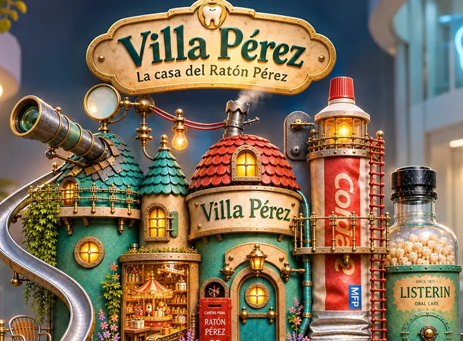

UNA AVENTURA QUE EMPIEZA EN TU CLÍNICA
¡El Ratón Pérez va a tu casa!
Ha llegado el momento de recoger tu diente. Descubre el recorrido por calles de verdad desde Villa Pérez hasta casa.
La casa del Ratón Pérez está enClínica del Doctor Abreu
Ruta pública de prueba: Puerta de Alcalá → Plaza Mayor · sin introducir datos personales.
Una aventura de fantasía con recorrido geográfico real.
PASO 1 · ZONA DE MADRES Y PADRES
¿Dónde llevo la magia?
Un adulto nos indica la dirección de casa. La usaremos para trazar la ruta real desde la clínica.

PASO 2 · EL VIAJE MÁGICO
¡Ya estoy en camino!
El Ratón Pérez sale de Villa Pérez…
MISIÓN ACTIVA · AVENTURA INTERACTIVA
0%De Villa Pérez hasta tu casa
0 / 3 desafíos superados
✧ ✧ ✧
✦ Salida✦ En camino✦ Muy cerca⌂ Llegada
— kmRuta a pie · simulación mágica
Duración del cuento
Activa la voz de demostración ♪
El viaje sigue calles reales; por privacidad, la parte infantil del mapa termina antes del portal. No es un GPS real.
¡He llegado a tu casa!
He seguido cada calle desde Villa Pérez. Ahora toca descansar… ¡mañana te espera una sorpresa!
✦MENSAJE DE VILLA PÉREZ
«Gracias por avisarme. Ha sido un viaje inolvidable. Cuida mucho de tu sonrisa y sigue soñando».
OrigenClínica del Doctor Abreu
Camino recorrido— km
✦ Las estrellas de tu aventura
La postal usa un recorrido decorativo: nunca se copia el trazado real de tu casa.
0 de 3 desafíos mágicos conseguidos